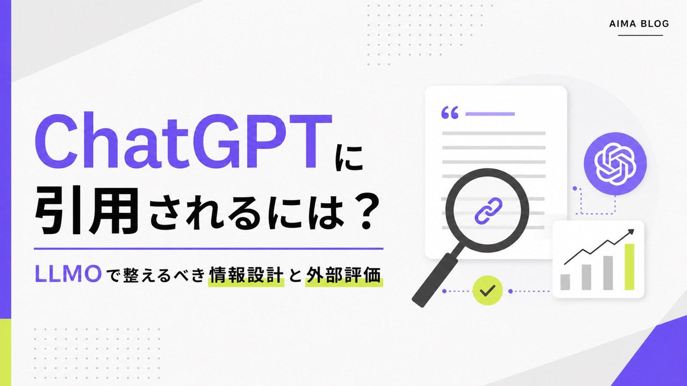
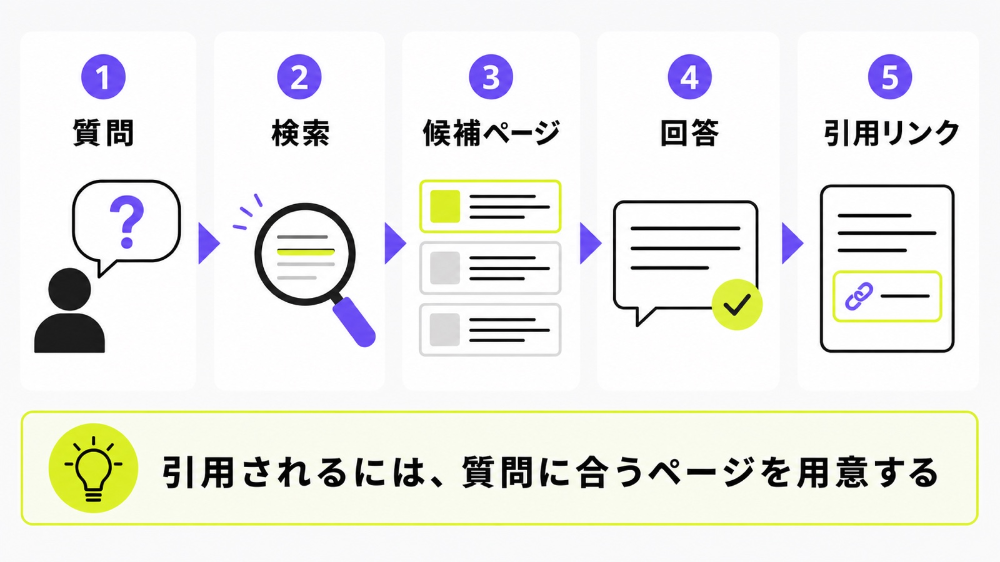
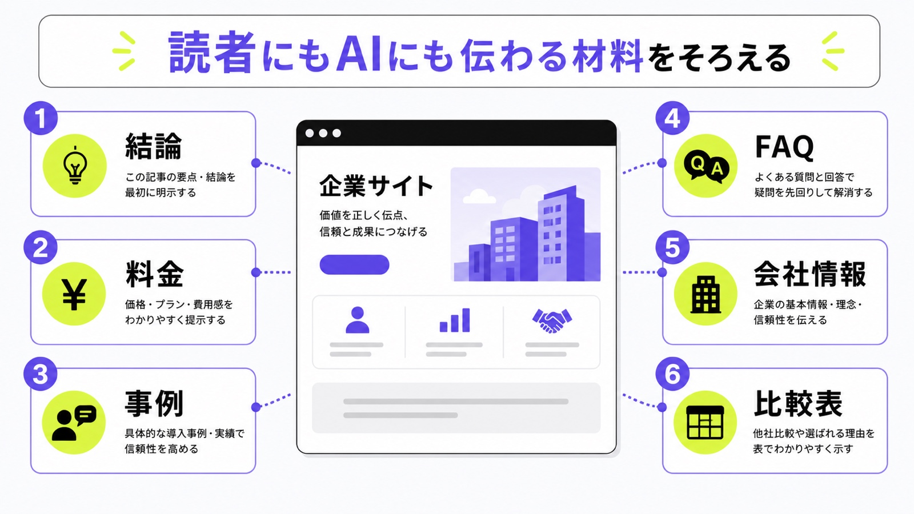
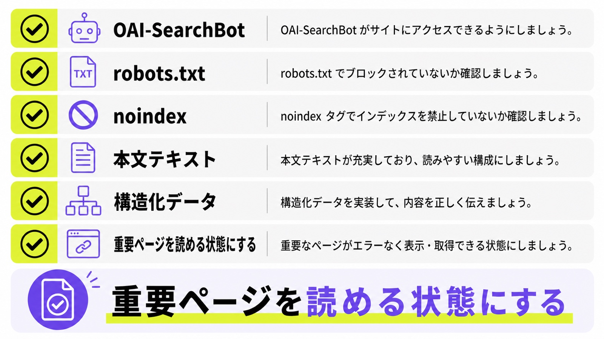

ChatGPTに引用されるには？LLMOで整えるべき情報設計と外部評価

ChatGPTに引用されるにはどうすればよいかを調べる人の多くは、「自社名だけでなく、自社サイトのURLも出してほしい」と考えています。
ただし、ChatGPTに必ず引用されるボタンや専用タグはありません。やることは、ChatGPTが検索したときに読みやすいページを用意し、質問に合う答え、根拠、会社情報、外部での評価をそろえることです。
この記事では、シート候補の「ChatGPT 引用されるには」という検索意図に合わせて、情報設計、OAI-SearchBot、外部評価、毎月の確認方法を、専門用語を減らして説明します。状況確認から始めたい方は、先にChatGPTの引用率調査も参考にしてください。
目次

ChatGPTに引用されるとはどういう状態か
まず「ChatGPTに引用される」を分けて考えます。社名が回答に出ること、サービス名が候補に入ること、自社ページのURLが出典として付くことは、それぞれ意味が違います。
社名表示とURL引用は別物
ChatGPTの回答に社名だけが出ても、根拠リンクが競合サイトや比較メディアに向いていることがあります。だから、確認するときは「社名が出たか」だけでなく、回答の近くに自社ページへのリンクがあるかまで見ます。目標はURL引用まで確認することです。
たとえば「ChatGPTに引用されるには」と聞いたとき、自社名が紹介されても、出典が他社記事なら問い合わせ前の信頼を取りきれません。社名表示、URL引用、競合名、回答の言われ方を同じ表に残すと、どこを直すべきか分かりやすくなります。
検索付き回答では出典リンクが出る
ChatGPTは、質問によってWeb検索を使うことがあります。検索を使った回答では、出典リンクや関連リンクが表示される場合があります。ここに自社ページが入るには、まず検索対象として読まれやすく、質問に合うページを作る必要があります。大切なのは検索付き回答でどう見えるかです。
“ChatGPT responses that use search may include inline citations.”
つまり、ChatGPT内でいつも引用が出るわけではありません。引用が出る場面を前提に、ページの本文、タイトル、FAQ、会社情報、外部からの言及を整えておく必要があります。
質問とページが近いほど引用候補に入りやすい
ChatGPTに引用されたいなら、単に記事数を増やすより、見込み客の質問とページ内容を近づけることが先です。「費用はいくらか」「比較するポイントは何か」「中小企業でもできるか」のような質問に、ページ内でそのまま答えます。狙うべきは質問との一致です。
たとえば「LLMO対策 低予算」と聞く人には、月額費用、相談範囲、作業内容、最低契約期間が必要です。「ChatGPTに会社名を出すには」と聞く人には、会社情報、サービス内容、外部掲載、構造化データの説明が必要です。1ページごとに役割を決めましょう。

まず整えるべき情報設計
情報設計とは、ページの中に「誰に、何を、いくらで、どんな根拠で提供するのか」を分かりやすく並べることです。ChatGPT向けでも、人間の読者向けでも、基本は同じです。
1ページ1テーマで結論を先に置く
1つのページに話題を詰め込みすぎると、何の答えなのか分かりにくくなります。サービスページならサービス内容、料金ページなら価格、FAQなら質問への答えを最初に出します。ChatGPTに使われたいページほど、1ページ1テーマで結論を先に置きます。
「ChatGPTに引用される方法」の記事なら、最初に「保証はないが、質問に合う本文、クロール可能な状態、外部評価を整える」と答えます。その後に理由、手順、チェック項目を足します。前置きが長いページは、読者にもAIにも要点が伝わりにくくなります。
会社概要・サービス・料金を本文で読めるようにする
AIに引用されたい情報ほど、画像だけ、PDFだけ、口頭説明だけにしないでください。会社名、所在地、対応範囲、サービス内容、料金、契約条件、実績、問い合わせ方法は、HTML本文で読める形に置きます。基本は本文で読める状態にすることです。
AIMAの場合は、LLMO特化、月額5万円、相談回数の上限なし、記事作成・修正込み、最低契約期間なしが判断材料です。こうした情報がサービスページだけにあり、関連記事やFAQに出ていないと、質問に対する答えとして使われにくくなります。
FAQは見込み客の質問文に合わせる
ChatGPTで聞かれる言葉は、検索キーワードより会話に近くなります。「中小企業でもできる？」「SEO会社に頼んでいても追加できる？」「費用はどれくらい？」のような質問文を、そのままFAQにします。FAQでは質問文で書くことが大事です。
FAQの答えは、最初の一文で結論を言い切ります。そのあとに例や注意点を短く足します。FAQPageの構造化データを入れる場合も、ページ上に見える質問とJSON-LDの質問を合わせてください。見えていない質問を裏側だけに入れるのは避けます。
一次情報と実例を足す
一般論だけの記事は、どの会社でも書けます。ChatGPTに引用されたいなら、自社の料金、支援範囲、相談でよく出る質問、改善前後の例、独自調査、事例を足してください。競合記事にはない自社だけの材料があるほど、読者が開く理由も強くなります。
たとえば、支援会社なら「どこまで作業するか」「どこから別料金か」「何ヶ月で何を見るか」を具体的に書きます。製造業なら製品仕様、対応素材、導入事例、納期、品質管理の情報が一次情報になります。読者が比較で使う材料を先回りして置きましょう。

技術面で見落としやすい確認
内容が良くても、ChatGPT側の検索やクローラーがページを見つけにくい状態では引用候補に入りにくくなります。難しく見えますが、最初に見る項目は多くありません。
OAI-SearchBotをrobots.txtで止めていないか
OpenAIは、ChatGPT Searchに関係するクローラーとしてOAI-SearchBotを案内しています。robots.txtでこのクローラーを止めていると、検索回答に出にくくなる可能性があります。まずOAI-SearchBotを確認してください。
“OAI-SearchBot is for search.”
OpenAIの説明では、OAI-SearchBotを許可することが検索結果への表示に関係します。GPTBotを止めることと、OAI-SearchBotを止めることは意味が違うため、まとめて全部ブロックしていないかを確認しましょう。
重要ページをnoindexやログイン内に置かない
サービスページ、料金、会社概要、事例、FAQがnoindexになっていたり、ログインしないと読めなかったりすると、引用される材料になりにくいです。大切な情報は、検索エンジンやAIが見つけられる場所に置きます。基本は開いて読める状態です。
よくある失敗は、料金表を画像だけにする、事例をPDFだけにする、FAQをアコーディオン内で読みづらくする、古いページへcanonicalを向けることです。まずはスマホでも普通に読めるか、ページタイトルと本文がずれていないかを見てください。
構造化データは本文の補助に使う
Article、BreadcrumbList、FAQPageなどの構造化データは、ページの意味を整理する補助になります。ただし、本文が薄いまま構造化データだけを入れても意味は弱いです。構造化データは本文と同じ内容を機械にも渡すために使います。
公開日、更新日、監修者、画像URL、パンくず、FAQの質問と答えが、見えているページ内容と合っているかを確認してください。人に見せる内容と機械に渡す内容が違うと、信頼しにくいページになります。
古い情報と矛盾を直す
ChatGPTに引用されたい会社ほど、サイト内外の情報をそろえる必要があります。会社名、住所、料金、提供サービス、代表者名、対応地域、事例数がページごとに違うと、AIも読者も判断しづらくなります。まず情報をそろえることが大切です。
古いキャンペーンページ、過去の料金表、放置された採用ページ、外部媒体の古い会社紹介も確認します。全部を一気に直す必要はありませんが、問い合わせに近いページから優先して直すと効果を見やすくなります。

外部評価と引用される理由を作る
ChatGPTに引用されるには、自社サイトだけでなく、外部からどう見られているかも大切です。外部評価とは、第三者の記事、比較ページ、取材、事例、業界内での言及などです。
第三者に言及される材料を出す
外部媒体に紹介されるには、紹介しやすい材料が必要です。会社概要、代表コメント、サービスの特徴、価格、実績、導入事例、調査データを公開しておくと、第三者が書きやすくなります。狙いたいのは外からの言及です。
ただし、外部リンクを無理に増やす話ではありません。読者にとって役に立つ情報を出し、比較記事や業界記事で自然に参照される状態を作ることが大切です。自社が何の専門家なのかが明確でないと、外部からも紹介されにくくなります。
比較記事・事例・調査データを用意する
AIは、比較や判断に使える材料を拾いやすいです。料金、支援範囲、対応業種、実績、向いている会社、向いていない会社を表で整理すると、読者にも引用元にも使いやすくなります。作るべきは引用される理由があるページです。
AIMAなら、月額5万円、相談回数の上限なし、記事作成・修正込み、最低契約期間なしという違いを、他のLLMO支援と比べやすい形で出せます。比較表は自社に都合よく盛るのではなく、読者が判断しやすい項目を並べることが重要です。
プレスリリースやSNSだけに頼らない
プレスリリースやSNSは知らせる力がありますが、情報の本体をそこだけに置くと、自社サイトに資産が残りにくいです。新サービス、料金改定、事例公開、調査結果は、SNSで告知しつつ、自社サイトにも詳しくまとめます。最後は自社サイトに戻す流れが必要です。
“links to relevant web sources.”
OpenAIは、ChatGPT searchがWeb上の関連ソースへのリンクを含むと説明しています。だからこそ、自社サイト側に引用されても困らない詳しい情報を置いておくことが大切です。
| 整える場所 | 具体例 | 目的 |
|---|---|---|
| 自社サイト | サービス、料金、FAQ、事例、比較表 | 根拠として読める材料を置く |
| 外部媒体 | 取材記事、比較記事、業界記事、導入事例 | 第三者からの評価を増やす |
| SNS・PR | お知らせ、調査結果、記事公開の告知 | 見つけてもらう入口を増やす |
何を毎月測ればいいか
ChatGPTへの引用は、一度見て終わりではありません。質問、回答、自社URL、競合名、問い合わせの変化を毎月同じ形で残すと、次の改善が決めやすくなります。
質問リストを10個に絞る
最初から100個の質問を見る必要はありません。問い合わせに近い質問を10個ほど選び、毎月同じ質問で確認します。「LLMO対策会社 おすすめ」「ChatGPTに会社名を出す方法」「AI検索対策 費用」のように、商談に近いものから始めます。最初は10個から開始で十分です。
質問を増やしすぎると、記録だけで疲れます。大事なのは、同じ質問を見続けて、回答の変化、自社URLの有無、競合名の増減を比べることです。見込み客が本当に聞きそうな言葉を優先してください。
自社名・自社URL・競合名を残す
記録する項目はシンプルで構いません。質問、確認日、ChatGPTの回答、自社名の有無、自社URLの有無、引用されたURL、競合名、次に直すページを残します。毎月の変化を見るには同じ表で記録することが重要です。
この記録があると、「社名は出るがURLがない」「競合の比較記事ばかり引用される」「料金ページを直した後に引用が増えた」など、原因を考えやすくなります。感覚ではなく、同じ見方で追うことが改善につながります。
クリックより相談数と指名検索を見る
AI検索では、クリック数だけでは成果を見にくいことがあります。回答内で比較候補に入った結果、直接問い合わせや指名検索が増える場合もあります。だから、PVだけでなく問い合わせに近い変化を見ます。
具体的には、指名検索、問い合わせフォームの内容、商談時に聞かれる質問、ChatGPTやAI検索経由らしい流入、既存記事の読了やCTAクリックを見ます。AIMAのような支援では、記事作成と測定をつなげて、次に直すページまで決めることが大切です。

AIMAで支援できること
ChatGPTに引用されたい企業では、記事を増やす前に、どの質問で出たいのか、今どこが弱いのかを分ける必要があります。AIMAでは、LLMO特化でこの整理から伴走します。
診断で出ない理由を分ける
まず、ChatGPTやAI検索で自社がどう見えているかを確認します。自社名が出ないのか、URLが引用されないのか、競合だけが出るのか、間違った説明をされるのかで対策は変わります。最初に原因を分けることが必要です。
AIMAの無料LLMO診断では、今のサイトがAI検索にどのくらい伝わりやすいかを確認できます。いきなり高額な改修をする前に、直すべきページと優先順位を見つけます。
記事作成と既存記事修正を並行する
ChatGPT引用対策では、新規記事だけを増やしても不十分です。サービスページ、料金、会社概要、FAQ、既存ブログに不足があれば、そこも直します。AIMAでは、支援範囲内で記事作成と既存記事修正を進め、作るだけで終わらない運用にします。
たとえば「ChatGPTに会社名を出す方法」の記事、料金ページ、LLMO診断ページ、関連記事を内部リンクでつなげると、サイト全体で何の専門会社か伝わりやすくなります。既存記事の見出しやFAQを直すだけでも、引用される材料は増やせます。
月5万円で小さく始める
AIMAは、LLMO・AI検索対策に特化し、月額5万円で相談できます。相談回数の上限なし、記事作成・修正込み、最低契約期間なしなので、まず数ヶ月だけ試して改善の方向を見られます。大きな初期投資より月5万円から小さく始められます。
高額なツールや大規模リニューアルが必要か迷っている場合は、まず質問設計、記事修正、FAQ追加、内部リンク、月次確認から始めるのが現実的です。詳しくはAIMAのサービス内容をご確認ください。
ChatGPT引用に関するよくある質問
ChatGPTに引用される確実な方法はありますか？
確実な方法はないです。OpenAIも、ChatGPT Searchでの上位表示を保証する方法はないと説明しています。だから、保証をうたう施策ではなく、OAI-SearchBotが読める状態、質問に合う本文、根拠、一次情報、外部評価を整えることから始めてください。
“There is no way to guarantee top placement.”
Bing対策だけすれば引用されますか？
Bingは確認材料の一つですが、Bingだけでは不十分です。OpenAIは、ChatGPT Searchが第三者の検索提供元やパートナーからの情報も使うと説明しています。Bingで見つかる状態に加えて、自社サイトの情報設計、外部での言及、OAI-SearchBotの許可も見ましょう。
llms.txtを置けばChatGPTに引用されますか？
llms.txtだけで引用されるわけではありません。補助的に使う考え方はありますが、まず重要なのはページがクロールでき、本文がテキストで読め、質問に答えていることです。llms.txtは優先度は高くないと考え、必要ならllms.txtの記事で基本を確認してください。
新規記事と既存ページ修正はどちらが先ですか？
多くの場合は、既存ページを先に確認します。サービス、料金、会社概要、事例、FAQが弱いまま新規記事を増やしても、ChatGPTが引用しやすい材料が不足します。既存ページの不足を埋め、それでも足りない質問に対して新規記事を作る流れが現実的です。
まとめ
ChatGPTに引用されるには、専用の裏技を探すより、質問に合うページを作り、本文で根拠と一次情報を示し、OAI-SearchBotが読める状態にすることが大切です。社名表示だけでなく、自社URLが引用されているかまで確認しましょう。
外部評価も重要です。比較記事、事例、調査データ、取材、業界内での言及があると、自社サイトだけでは伝わりにくい信頼材料が増えます。毎月同じ質問で確認し、足りないページを小さく直していく運用が必要です。
AIMAは、LLMO特化、月額5万円、相談回数の上限なし、記事作成・修正込み、最低契約期間なしで、ChatGPTに引用されやすい情報設計を支援します。まずは無料LLMO診断またはお問い合わせからご相談ください。
参考文献
参考：OpenAI Help Center｜ChatGPT Search
参考：OpenAI Developers｜Overview of OpenAI Crawlers
参考：OpenAI｜Introducing ChatGPT search
競合確認：LANY LLMOコンサルティング、SEデザイン LLMO診断・伴走支援、デジタルアイデンティティ LLMO調査サービス